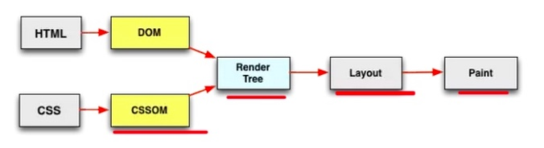

从页面加载到首屏渲染时机原文出处:本文由博客园博主js-coder提供。
原文连接:https://www.cnblogs.com/dahe1989/p/11765066.html
序言
随着用户量越来越多，业务方关于用户体验的要求也在不断提高，首屏渲染时间就成为了一个提高用户体验的指标，减少用户等待的时间，在一定程度上就会提高用户的留存。
页面加载渲染是怎样的一个过程
参考自Chrome的First Paint
- 浏览器输入url，浏览器发送请求到服务器，服务器将请求的HTML返回给浏览器。
- 浏览器下载完成HTML(Finish Loading HTML)之后，便开始从上到下解析。
- 解析的过程中碰到css和js外链（其实HTML的下载也是这个流程）都会执行以下过程：
- Send Request:表示给这个外链对应的服务器发送请求
- Receive Response: 表示接收响应，这里是表示告诉浏览器可以开始从网络接收数据了
- Receive Data:表示开始接收数据
- Finish Loading: 表示已经完成下载数据。
- Parse Stylesheet/Evaluate（默认情况下js下载完成之后执行Evaluate，css下载完成后会进行Parse Stylesheet）
- 所有的css下载完成后Parse Stylesheet然后开始构建CSSOM DOM（文档对象模型）和 CSSOM（CSS对象模型）会合并生成一个渲染树(Render Tree)
- 根据渲染树的内容计算处各个节点在网页中的大小和位置（Layout，可以理解为“刻章”）
- 根据Layout绘制内容在浏览器上（Paint，可以理解为“盖章”）。

通过这个过程我们可以看到，整个页面加载到渲染其实可以分为两个部分，第一部分是资源的的加载，简称为RRDL；第二部分是页面的渲染。
探讨首屏渲染，我们也将从这两个方面入手来讨论。
首屏渲染是什么时候开始呢？
参考自Chrome的First Paint
先看一个结论，触发首屏渲染的时机，会有两种情况：
- 如果第一脚本前的JS和CSS加载完了，body中的脚本还未下载完成，那么浏览器就会利用构建好的局部CSSOM和DOM提前渲染第一脚本前的内容（触发FP）；
- 如果第一脚本前的JS和CSS都还没下载完成，body中的脚本就已经下载完了，那么浏览器就会在所有JS脚本都执行完之后才触发FP。
第一脚本：body中的第一个外链脚本。
所以，我们需要按照第一条的方式来安排页面的内容，争取在第一脚本前JS和CSS要尽快加载完，然后尽快进入首屏渲染。
如何加快首屏渲染？
参考自Chrome的First Paint
- CSS放在head中，JS放在</body>前（如果在head必须放JS，也尽量减少他的大小，把大JS文件放</body>前）。
- 减小head中CSS和JS大小（gzip了解一下？)
- 优化head中的JS和CSS外链的网络情况，减少Stalled、TTFB和Content Download的时间。
- 在第一脚本前使用骨架图，可以减少用户的白屏感知时间（对于使用JS插入模板来渲染的框架，建议将骨架图的路由生成逻辑单独提出来）
整个页面的生命周期是怎样的呢？
参考自页面生命周期：DOMContentLoaded, load, beforeunload, unload解析
HTML页面的生命周期有以下以下几个重要事件：
- DOMContentLoaded ：浏览器已经完全加载了 HTML，DOM 树已经构建完毕，但是像是<img>和样式表等外部资源可能并没有下载完毕。
- load：浏览器已经加载了所有的资源（图像，样式表等）。
- beforeunload/unload ：当用户离开页面的时候触发。
- readyState ：描述document的loading状态，其实是对页面加载事件的细化，比如loading表示DOMContentLoaded还没有触发，我们在这个时候注册DOMContentLoaded事件是有效的。interactive后会触发DOMContentLoaded，comoplete之后会触发load事件。readyState的改变会触发readystatechange事件。
- loading 加载：document仍在加载。
- interactive 互动 ： 文档已经完成加载，文档已被解析，但是诸如图像，样式表和框架之类的子资源仍在加载。
- complete ：文档和所有子资源已完成加载。状态表示 load 事件即将被触发。
并行下载，串行执行
页面依赖外部资源下载是并行的，但是DOM树解析、js执行和首屏渲染却是串行的。理解整个过程，就能明白为什么Head中不要放JS的原因，以及CSS为什么要尽量小。
页面渲染的大致过程为，先下载解析HTML并建立DOM树，再解析css绘制渲染树。前者搭建页面结构，后者增添页面样式。而在建立DOM树的过程就会遇到诸如img、外联css和script标签，此时就要加载外部资源了。加载资源是由单独的下载线程进行异步加载的，浏览器会并行加载，不过具体并行最大数量是有一定限制的，不同浏览器可能不一样。
但是加载css和js资源比较特殊，它们的加载会影响页面渲染。css加载不会阻塞DOM树解析，但会阻塞渲染（这是由于渲染依赖于css，如果不等css加载完就渲染的话那么等css加载解析完又得重新渲染，可能又要重绘或者回流）。对于js资源的加载，则会阻塞DOM树的构建和渲染，除非设置了script标签的异步属性。
放在head中会在解析DOM树和渲染页面前就加载，并阻塞页面。js正常情况下加载完就会立即执行，在js脚本中只能访问当前<script>以上的DOM，脚本执行结束后再继续解析DOM。js执行引擎和页面渲染是由不同的线程来执行，但这两者是互斥的，也就是说js执行过程是无法构建DOM和渲染页面的。这是一种优化机制，由于js可能会对DOM及样式进行修改，如果解析js过程中同时构建DOM，就可能造成前后内容不一致或者重复构建。所以应该把script放在body中，使页面更快完成渲染。
一些常识
参考自Chrome的First Paint
- Chrome会渲染局部CSSOM和DOM。整个特别重要，理解这个概念，才能理解为什么不需要DOMContentLoaded，就可以进行首屏渲染了，不然总是会误解，首屏渲染必须在DOMContentLoaded之后。
- First Paint和DOMContentLoaded、load事件的触发没有绝对的关系，FP可能在他们之前，也可能在他们之后，这取决于影响他们触发的因素的各自时间（FP：第一脚本前CSSOM和DOM的构建速度；DOMContentLoaded：HTML文档自身以及HTML文档中所有JS、CSS的加载速度；load：图片、音频、视频、字体的加载速度）。
- DOMContentLoaded和load事件也没有强制的先后顺序，DOMContentLoaded一般在load事件之前触发，但也可能在load事件之后触发。
- 第一脚本前的CSS如果还会去加载字体文件，那么即使CSSOM和DOM构建完成触发FP，页面内容也会是空白，只有等到字体文件下载完成才会出现内容（这也是我们在打开一个加载了谷歌字体的网站会白屏很长时间的原因）。
- 默认情况下，CSS外链之间是谁先加载完成谁先解析，但是JS外链之间即使先加载完成，也得按顺序执行。
- link外链后面紧跟script外链，须先等link parse完成之后，script才会执行，即使script先下载完成。script后面紧跟link，也是一样，会等script执行完之后，link才会parse。
- 如果script之后紧跟几个link且script比这几个link的下载时间都长，那script执行完成之后link是按顺序执行。
- RRDL：
- R：send Request，发送资源请求
- R：receive Response，接收到服务端响应
- D：receive Data，开始接受服务端数据(一个资源可能执行多次)
- L：finish Loading，完成资源下载
- 浏览器在RRDL的时候，在D（Receive data）这个步骤可能执行多次。
- TTFB:Time To First Byte，第一个字节返回的时间，这个是对应send Request到receive Response这段时间。
- 浏览器会给HTML中的资源文件进行等级分类（Hightest/High/Meduim/Low/Lowest）,一般HTML文档自身、head中的CSS都是Hightest，head中JS一般是High，而图片一般是Low，而设置了async/defer的脚本一般是Low，gif图片一般是Lowest。